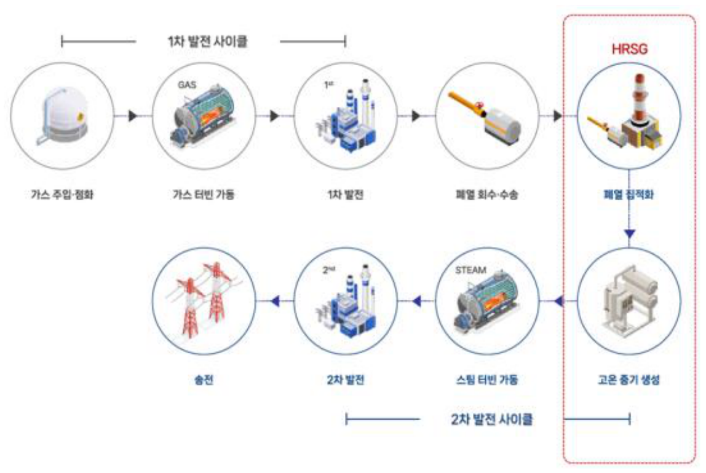

발전설비와 가스 — 대형 가스터빈은 2030년까지 매진, 연료는 카타르 공백을 미국산·현물로 메우는 중
한눈에 보기
결론
- 대형 가스터빈은 «주문 110GW vs 생산 60~70GW»의 공급자 시장 → 리드타임 2~3년 → 6년, kW당 가격 2019년 대비 약 3배(2027E) (신한, 2026-05-27; LS, 2026-05-19)
- 납기를 못 기다리는 데이터센터는 온사이트 전원(항공전환형·가스엔진·SOFC 연료전지·ESS)으로 우회 → «시간을 사는 비용»이 전원 선택 기준이 됨
- 연료 쪽은 카타르 Ras Laffan 피격(캐파 17%)으로 아시아 LNG가 미국산·현물로 대체 → JKM 상승, 가스공사 민수용 미수금은 13조원대에서 다시 증가 압력
| 지표 | 값 | 출처 |
|---|---|---|
| 글로벌 GT 주문 vs 제조능력(2025말) | 110 vs 60~70GW | (신한, 2026-05-27) |
| 대형 GT 리드타임 | 2~3년 → 6년 | (신한, 2026-05-27) |
| 대형 GT 가격(2019 → 2027E) | 약 200 → 600$/kW | (LS, 2026-05-19) |
| JKM(9/15 → 11/17) | 25 → 28$/MMBtu | (LS, 2026-09-15·11-17) |
| 가스공사 민수용 미수금(2Q26 말) | 13.5조원 | (유안타, 2026-09-10) |
flowchart LR D1["AI 데이터센터<br/>미국 가스발전 개발 185GW"] --> GT["대형 가스터빈<br/>3사 과점·슬롯 2030 매진"] D2["한국 석탄 대체·메가프로젝트<br/>11차 가스 13.6GW"] --> GT GT --> CC["복합화력<br/>GT + HRSG + 스팀터빈"] GT -. "납기 6년" .-> ON["온사이트 대안<br/>항공전환형·가스엔진·SOFC·ESS"] F1["LNG 공급<br/>카타르 피격·호르무즈"] --> F2["미국산·현물 대체<br/>JKM 상승"] F2 --> K1["가스공사 원료비 연동<br/>민수용 동결 → 미수금"] F2 --> K2["발전용 가스요금·SMP<br/>직도입 발전사 마진"] K1 --> H["도시가스·지역난방<br/>열요금 동결 → 열 미수금"] CC --> K2
구성: 신한(2026-05-27) 가스터빈 수급·가스공사 요금 구조, LS(2026-05-19) 미국 가스발전 개발 규모, 키움(2026-08-25) 11차 전기본 가스 용량, 하나(2026-09-21) LNG 대체 흐름을 엮음
- 원천 범위: 원천 320건 중 2025년 발간은 5건, 이 노트가 쓴 것은 2건(SK 11-27·iM 12-01)뿐이고 리포트는 2026년 7~11월에 몰림 → 2025년 기준선은 얇음. 2025년 수준은 리포트 안의 과거 수치로만 확인
- 경계: 유가·정제마진은 원유 백과 몫. LNG는 발전 연료·가스요금 관점만. SOFC 셀·ESS 배터리 소재는 다루지 않음
- 관련 노트: 02_에너지_전력수요 · 03_에너지_전력기기 · 05_에너지_원자력 · 07_에너지_신재생과ESS · 08_에너지_전력시장과요금 · 09_에너지_시장규모모델 · 01_에너지_용어집
① 기초: 발전 방식·복합화력 구성·가스 공급 구조
요약
- 가스 발전은 «단순(가스터빈만) → 복합(배기열로 스팀터빈 추가)»으로 효율이 40%대에서 60%대로 오름. 복합의 열회수 장치가 HRSG
- 한국형 표준복합 1기 = 가스터빈 380MW + 스팀터빈 170MW + HRSG 1기 = 550MW, 파워블록 3,000~3,500억원
- 한국 LNG의 73%는 가스공사가 들여오고 요금은 원료비 연동제 → 민수용만 정책으로 묶여 미수금이 쌓이는 구조
발전 방식별 단위·효율
| 방식 | 단위 용량 | 효율 | 주 용도 | 출처 |
|---|---|---|---|---|
| H급 대형 GT | 400~600MW | — | 복합·기저 | (LS, 05-19) |
| 380MW급 단순(S2) | 380MW | >43% | 피크·조기 가동 | (하나, 09-08) |
| 380MW급 1on1 복합 | >570MW | >63% | 기저·중간 | (하나, 09-08) |
| F급 GT | 250~300MW | — | 복합 | (LS, 05-19) |
| 항공전환형 GT | 35~115MW | — | 피크 단순 사이클 | (하나, 09-03) |
| SOFC 연료전지 | 5~20MW 모듈 | 55~65% | 온사이트 | (유안타, 03-05; 한화, 08-03) |
H급·F급 구분은 LS 표(소형 30~100MW·F급 250~300MW·H급 400~600MW). 380MW급 수치는 두산 DGT6-300H S2 사양(하나 인용). 2on1 복합은 >1,140MW
복합화력 사이클과 HRSG

출처: 키움, 2026-08-25, p.101 (비에이치아이 자료)
- 1차: 가스터빈이 연소가스로 발전 → 2차: HRSG가 배기열을 모아 증기 생성 → 스팀터빈 발전
- HRSG는 가스터빈 수에 비례해 붙는 설비 → GT 수주가 HRSG 수주의 선행지표
한국형 표준복합화력 1기 금액 구성
| 구성 | 용량·수량 | 금액 | 출처 |
|---|---|---|---|
| 가스터빈 | 380MW × 1 | 2,500~3,000억원 | (키움, 08-25) |
| 스팀터빈 | 170MW × 1 | (GT에 포함) | (키움, 08-25) |
| HRSG | 1기 | 약 500억원 | (키움, 08-25) |
| 파워블록 합계 | 550MW | 3,000~3,500억원 | (키움, 08-25) |
«가스터빈+스팀터빈+발전기» 묶음 금액이 2,500~3,000억원. EPC·토목은 별도
온사이트 가스 전원의 운전 특성
| 항목 | 가스엔진 | 항공기엔진형 | 단순 가스터빈 |
|---|---|---|---|
| 기동시간 | 2분 | 8분 | 5~10분 |
| 램프업(%Pnom/분) | >100% | 50% | 8~15% |
| 최소 부하 | 10% | 20~40% | 20~50% |
| 효율(100% 부하) | 45~48% | 36~40% | 35~39% |
| 효율(50% 부하) | 45~48% | 28~33% | 27~32% |
자료: 바르질라, 미래에셋(2026-07-16). 엔진 제조사 자료라 엔진에 유리한 비교일 수 있음
한국 LNG 수입 구조 (2025년)
| 구분 | 물량(만 톤) | 비중 | 출처 |
|---|---|---|---|
| 전체 수입 | 4,672 | 100% | (하나, 09-21) |
| 가스공사 | 3,428 | 73.4% | (하나, 09-21) |
| 민간 직도입 | 1,244 | 26.6% | (하나, 09-21) |
| 직도입 중 발전용 | 739 | 59.4% | (하나, 09-21) |
| 직도입 중 산업용 | 505 | 40.6% | (하나, 09-21) |
- 요금 구조
- 가스공사 도매요금 = 총괄원가제, 원료비는 연동제 → 원가와 실제 요금 차이는 손익이 아닌 «미수금»으로 처리 (신한, 2026-05-27)
- 발전용·상업용은 원가가 비교적 빨리 반영, 민수용은 정책으로 유보·분할 → 미수금의 약 98%가 민수용 (신한, 2026-05-27)
- LNG 도입 → 발전사 공급까지 2~3개월 시차, 유가 → 도입가 반영은 3~4개월 시차 (하나, 2026-07-31; 유진, 2026-11-11)
- 직도입 발전공기업 비중은 발전용 직도입의 14.0%, 나머지 86.0%는 민간 발전사 (하나, 2026-09-21)
② 전방 수요: AI 데이터센터·석탄 대체·대미투자
요약
- 글로벌 GT 주문은 2025년 110GW로 2001년 이후 최대, 2029년까지 생산한계(약 65GW)를 웃도는 구간이 이어질 전망
- 미국 개발 중 가스발전 60GW(2025) → 185GW(2026), 이 중 데이터센터향 35.5%
- 한국은 11차 기준 2026~30년 가스 13.6GW 증설에 12차 전기본·메가프로젝트 상향분이 얹힐 수 있음. 대미투자 1호도 텍사스 가스복합(6.3GW)
글로벌 가스터빈 주문 vs 생산한계
xychart-beta title "글로벌 가스터빈 주문 vs 현재 생산한계 (GW)" x-axis ["2015","2016","2017","2018","2019","2020","2021","2022","2023","2024","2025","26F","27F","28F","29F","30F"] y-axis "GW" 0 --> 120 line [60,52,38,32,41,40,34,35,46,57,110,92,101,102,98,70] line [65,65,65,65,65,65,65,65,65,65,65,65,65,65,65,65]
선 순서: ① 주문 ② 현재 생산한계(수평선). 자료: Wood Mackenzie·IEA, 신한(2026-05-27) 차트 판독(근사). 2001년 약 90GW·2007년 약 82GW가 이전 고점
| 항목 | 값 | 출처 |
|---|---|---|
| 2025말 글로벌 주문 | 110GW | (신한, 05-27) |
| 글로벌 제조능력 | 60~70GW | (신한, 05-27) |
| 수요 > 생산능력 예상 기간 | 향후 5년 | (신한, 05-27) |
| 공급 부족 지속 | 2030년 이후까지 | (유진, 10-12) |
2030년 글로벌 GT 시장 전망 — 1년 새 데이터센터 몫이 4배
| 전망 시점 | 발전용 | 데이터센터 | 출처 |
|---|---|---|---|
| 2025년 전망 | 약 270GW | 약 45GW | (신한, 05-27) |
| 2026년 전망 | 약 290GW | 약 205GW | (신한, 05-27) |
두산에너빌리티 자료를 신한이 재인용한 막대그래프 판독(근사)
미국: 가스발전이 데이터센터의 주 전원
| 지표 | 값 | 출처 |
|---|---|---|
| 개발 중 가스발전(2025 → 2026) | 60 → 185GW | (LS, 05-19) |
| 그중 데이터센터향 | 35.5% | (LS, 05-19) |
| DC 공동배치 자가발전 누적(2025.9) | 26GW | (대신, 06-18) |
| FERC 패스트트랙 처리 발전설비 | 50GW 이상 | (KB, 08-31) |
| 1Q26 미국 H급 대형 GT 발주 | 18기 | (두산에너빌리티 IR, 07-27) |
- 패스트트랙(PJM·MISO·SPP, ~2027년 한시) 물량은 대부분 가스발전 → 인허가가 줄어도 GT 리드타임이 병목으로 남음 (KB, 2026-08-31)
- 1Q26 미국 발주량은 최근 10년 내 최대(McCoy 1Q 보고서 인용) (두산에너빌리티 IR, 2026-07-27)
온사이트 발전 채택 의향 (Bloom Power Survey)
| 서베이 시점 | 2030년까지 일부 온사이트 | 100% 온사이트 |
|---|---|---|
| 2024-04 | 13% | 1% |
| 2024-11 | — | 25% |
| 2025-04 | 38% | 27% |
| 2025-11 | — | 33% |
자료: Bloom Power Survey, 하나(2026-09-16), 대신(2026-06-18). «일부 온사이트»는 2024·2025년 서베이 2개 값만 공개
- 데이터센터는 18~24개월에 지어지는데 초고압 변전·송전 확충은 3~7년 → 그 공백을 메우는 수단이 온사이트 (유안타, 2026-03-05)
- 계통 전원은 백업(필요전력의 5~10%)으로, 자가발전은 주전원으로 역할이 바뀌는 중 (대신, 2026-06-18)
한국: 석탄 대체 + 메가프로젝트
| 항목 | 값 | 출처 |
|---|---|---|
| 11차 가스 증설 2026~30 | 13.6GW | (키움, 08-25) |
| 11차 가스 증설 2031~35 | 5.9GW | (키움, 08-25) |
| 11차 LNG 설비 2025 → 2030 | 47.3 → 58.8GW | (교보, 10-26) |
| 같은 기간 석탄 | −9.1GW | (교보, 10-26) |
| 2038년까지 LNG 건설 | 약 23GW | (삼성, 03-14) |
| LNG 용량시장(개설 예정) | 1.3GW | (하나, 09-18) |
삼성 23GW 중 신규 4.4GW·기존 화력 대체 18.7GW. 키움: 10년간 복합화력 약 35기 증가(1기 550MW 기준)
- 12차 전기본 수요 상향: 2040년 최대전력 158.4GW(당초 131.8GW) (한화, 2026-09-21)
- 장관 «불가피하게 가스 발전이 일부 늘어날 것»(8/18) → LNG 역할 확대 가능성 (유안타, 2026-09-10)
- 신규 필요 설비 12~20GW(재생 실효용량 차감 후) → 원전·SMR·LNG 후보 (하나, 2026-08-28)
- 2030년까지 추가 전력 83.5TWh를 가스로만 채우면 신규 24GW, 이용률 상향 시 8GW (키움, 2026-08-25)
- 키움은 가스 발전 계획이 50~100% 상향되면 국내 GT+ST 시장 9~11조 → 15~20조원으로 봄 (키움, 2026-08-25)
대미투자 1호: 텍사스 엔시날 가스복합
| 항목 | 내용 | 출처 |
|---|---|---|
| 총 규모 | 6.3GW | (하나, 09-08) |
| 1단계 | 1.3GW 단순 사이클 | (하나, 09-08) |
| 1단계(다른 보도) | 1.4GW GT → 4.9GW 복합 | (iM, 09-28; 핀릿, 09-21) |
| 2~6단계 | 각 1GW 복합 | (하나, 09-08 건설) |
| 사업비 | 198 → 250 요구 → 223억$ | (하나, 09-08) |
| 1단계 상업운전 목표 | 2030년 | (하나, 09-08) |
| kW당 사업비(계산) | 3,446$ (6.472GW) | (유진, 10-12) |
- 전력은 ERCOT 판매 또는 인접 AI 데이터센터 PPA 공급 검토 (하나, 2026-09-08)
- 1.3GW = 270MW급 5기 또는 380MW급 3~4기 규모 → 한국 GT·HRSG·EPC 참여 여지 (하나, 2026-09-08; iM, 2026-09-28)
- 정부는 보도 직후 «사실과 다르다» 해명 → 규모·일정은 공식 발표로 재확인 필요 ⚠ (하나, 2026-09-08)
③ 기술 심화: GT 등급·고온부품·온사이트 전원·연료전지·HRSG
요약
- 대형 GT의 핵심 병목은 단결정(Single-crystal) 터빈 블레이드 → 양산 가능한 공급사가 극소수
- 온사이트 전원은 «용량은 GT, 속도는 SOFC·엔진». SOFC는 수개월 내 가동이 강점이지만 발전단가는 GT보다 높음
- 국내 연료전지는 CHPS(수소발전 입찰) 물량이 줄어 단가 경쟁 심화, HRSG는 2024~25년 수주 정점 후 2026년 숨 고르기
제작사별 모델 라인업
| 제작사 | 소형(30~100MW) | F급(250~300MW) | H급(400~600MW) |
|---|---|---|---|
| GE Vernova | LM2500·LM6000 | 7F.05·9F.05 | 7HA.02/03·9HA |
| Siemens Energy | SGT-A35·A65 | SGT-4000F | SGT-8000H·9000HL |
| Mitsubishi | FT8 | M501F·M701F | M501J·M701J |
| 두산에너빌리티 | DGT-100(90MW) | DGT6-270H | DGT6-380H |
자료: 각 사, LS(2026-05-19). 두산 DGT-100은 2027년 6월 완제품 예상(유안타, 2026-04-30). 두산은 세계 5번째 독자 대형 GT 상용화(신한, 2026-05-27)
- 고온부품이 병목이자 수익원
- 단결정 블레이드 = 극도의 정밀도 + 소수 공급사 → 업계 핵심 병목 (신한, 2026-05-27)
- 블레이드·베인·연소기 등 고온부품은 약 7~8년 주기 교체 → LTSA(장기유지보수)가 20~30년 반복 매출 (신한, 2026-05-27)
- 로켓엔진(등축정)보다 GT 블레이드(단결정)가 주조 난도가 높음 → 신규 진입 검증에 시간 필요 (하나, 2026-09-03)
- 과거 호황 뒤 공급과잉 경험 → 3사가 보수적으로 증설하는 이유 (신한, 2026-05-27)
온사이트 전원별 가동까지 걸리는 시간 — 하우스마다 다름
| 전원 | 가동까지 | 출처 |
|---|---|---|
| 대형원전 | 7년 | (한화, 08-03) |
| 지열·수력 | 5년 | (한화, 08-03) |
| 가스터빈(건설) | 2년 | (한화, 08-03) |
| 가스터빈(납기) | 2030년 이후 | (미래에셋, 07-16) |
| SOFC | 3~4개월 | (한화, 08-03) |
| SOFC | 1년 이내 | (대신, 06-18) |
| SOFC(오라클 사례) | 55일 | (하나, 09-16) |
- GT는 공급 후에도 실제 발전까지 최소 6개월 더 걸림 (IRKUDOS, 2026-07-10)
- BNEF 기준 연료전지는 경쟁 전원(가스엔진·항공전환형·태양광)이 발주되기도 전에 가동 가능한 유일한 단기 전원 (하나, 2026-09-16)
온사이트 전원 구성 비중 — 집계 기준이 제각각
| 집계 | 가스터빈 | 연료전지 | 가스엔진 | 출처 |
|---|---|---|---|---|
| 미국 확정 프로젝트 비중 | 55% | 38% | 4% | (대신, 06-18) |
| 온사이트 내 점유율 | 약 40% | — | — | (한화, 08-03) |
| 선호 비율(서베이) | 33% | 47% | 38% | (하나, 09-16) |
대신은 태양광 3% 별도(Bloom 자료). 하나의 33%는 «소형 터빈», 38%는 «왕복엔진», 복수응답으로 합계 100% 초과
- 1GW급을 단일 전원으로 버티긴 어려움 → GT 100~300MW 선가동 + SOFC 5~20MW 모듈 + 재생 + BESS 50~200MW + 계통이 섞인 하이브리드가 현실 (유안타, 2026-03-05)
- SOFC는 DC 전력을 바로 냄 → 800V DC 배전과 궁합이 좋고 인버터로 계통 안정에도 기여 (유진, 2026-03-04)
연료전지(SOFC) 산업 지표
| 지표 | 값 | 출처 |
|---|---|---|
| DC향 연료전지 1위사 점유율 | 90% 후반 | (하나, 09-16) |
| 1위사 캐파(현재 → 2026말) | 1 → 2GW | (하나, 09-16) |
| 1위사 부지 내 가시 캐파 | 5GW | (하나, 09-16) |
| 최대 단일 프로젝트 | 2.45GW | (하나, 09-16) |
| DC 서비스 계약 기간 | 6~7 → 10~15년 | (하나, 10-13) |
| SOFC 시장(2022 → 2032) | 1.23 → 20.67십억$ | (한화, 08-03) |
1위사 = 블룸에너지. 2.45GW = 오라클 뉴멕시코 Project Jupiter(4월 GT·디젤을 연료전지로 교체). SOFC 시장 규모는 SPHERICAL Insights 차트 판독. 한투(08-13)는 점유율 «90% 상회»
발전단가 비교 — 속도의 대가
| 전원 | 단가 | 기준 | 출처 |
|---|---|---|---|
| GE GT 전력 | 60~70$/MWh | 현재 | (하나, 09-16) |
| SOFC 10MW 5년 PPA | 99$/MWh | 2023 출시 모델 | (하나, 09-16) |
| 가스터빈 LCOE | 41~74$/MWh | Lazard 2019 | (하나, 09-16) |
| 연료전지 LCOE | 103~152$/MWh | Lazard 2019 | (하나, 09-16) |
| SMR LCOE | 214$/MWh | Lazard 2026 | (하나, 09-16) |
| BESS LCOE(2025) | 78$/MWh | 2017년 505 | (삼성, 05-19) |
- ESS(4h) 발전비용이 신규 가스터빈보다 65~75% 낮다는 분석(Wood Mackenzie, 2026년 미국 신규 설비) (유진, 2026-10-12)
- 다만 ESS는 방전시간 제약 → 장시간 공급하는 가스발전을 완전히 대체하긴 어려움 (유진, 2026-10-12)
한국 공급망: SOFC 1위사 밸류체인 수주
| 품목 | 계약 규모 | 시점 | 출처 |
|---|---|---|---|
| SOFC 모듈·부품 생산 | 785억원 | 2026-07 | (한투, 08-13) |
| 서버용 전극셀 자동화 장비 | 1,504억원 | 2026-07 | (한투, 08-13) |
| DC용 슈퍼커패시터 시스템 | 412억원 | 2026-06 | (한투, 08-13) |
| 북미 DC 연료전지 전력설비 | 3,190억원 | 2026-04 | (한투, 08-13) |
| 미국 DC용 변압기 | 503억원 | 2026-04 | (한투, 08-13) |
순서대로 서진시스템·코세스·비나텍·LS ELECTRIC·산일전기 사례(한투, 2026-08-13 표 1)
국내 연료전지·수소발전 제도
| 항목 | 값 | 출처 |
|---|---|---|
| 2026 일반수소 입찰 물량 | 930GWh | (하나, 11-05) |
| 일반수소 물량 YoY | −28.5% | (하나, 10-22) |
| 청정수소 입찰 물량 | 500GWh | (하나, 11-05) |
| 2024 청정수소 입찰 → 낙찰 | 6,500 → 750GWh | (하나, 10-22) |
| 청정수소 비가격평가 비중 | 40 → 50% | (하나, 10-22) |
| 국산 SOFC 첫 상용 단지 | 39.8MW | (하나, 11-05) |
- 일반수소는 12/4 마감 후 연내 우선협상, 청정수소는 2027년 5월 마감·6월 결정. 석탄-암모니아 혼소는 지원 제외 (하나, 2026-11-05)
- 국산 SOFC 수율 70% 이상(2025말) → 2026말 85% 목표 (DS, 2026-01-13)
HRSG(배열회수보일러) 수주 흐름
| 항목 | 값 | 출처 |
|---|---|---|
| 국내 HRSG 시장(11차 기준) | 약 2조원 | (키움, 08-25) |
| 가스 계획 상향 시 | 3~4조원 | (키움, 08-25) |
| 국내 1위사 수주 2024 | 1.48조원 | (iM, 2025-12-01) |
| 〃 2025 | 1.8조원 | (IBK, 03-16) |
| 〃 2026 가이던스 | 2 → 1~1.4조원 | (유안타, 10-14) |
| 하동 LNG복합 HRSG 1건 | 1,282억원 | (iM, 09-28) |
국내 1위사 = 비에이치아이(2024~25년 2년 연속 복합화력용 HRSG 점유율 1위, IBK 2026-03-16). 2025년 수주 중 해외 1.6조원. 하동 건은 SNT에너지 사례
- 2026년 9월말 누적 수주 약 8,800억원 중 HRSG 약 8,000억원 추정 → 가이던스 하향은 동유럽 EPC(5,000~6,000억원) 불확실성 때문 (유안타, 2026-10-14)
- 발전소가 대형화될수록 프로젝트당 HRSG 금액도 상승 (키움, 2026-08-25)
④ 캐파·증설: 글로벌 3사와 후발 주자
요약
- GE Vernova·Siemens Energy·MHI 3사가 제조 캐파 약 70% 과점. 3사 모두 증설 중이지만 2028년까지 1.5~2배 수준
- GE는 수주잔고+슬롯예약 116GW(2Q26), 연말 목표 125GW → 2030년 물량 매진, 2031년분도 판매 중
- 후발 두산은 연 8기 → 12기(2028)로 늘리는 중. 1Q26 미국 H급 18기 중 7기 수주로 3사와 같은 경쟁 테이블에 진입
제조 캐파와 증설 계획
| 제작사 | 기존(기/년) | 증설 후 | 시점·투자 | 출처 |
|---|---|---|---|---|
| GE Vernova | 약 50 | 70~80 | 2026말·1.6억$+ | (신한, 05-27) |
| Siemens Energy | 약 30 | 약 50 | 미국 10억$ 투자 | (LS, 05-19; 신한, 05-27) |
| MHI | 약 20 | 약 40 | 2028년까지 2배 | (LS, 05-19; 신한, 05-27) |
| 두산에너빌리티 | 8 | 12 | 2028년 | (유안타, 04-02) |
Siemens·MHI 대수는 LS 차트 판독(근사, Siemens는 수주잔고 역산 추정치). LS 차트상 GE 약 48 → 75기, 두산 약 6~7 → 12기로 유안타(연 8기)와 다름 ⚠
| 제작사 | GW 기준 캐파 | 출처 |
|---|---|---|
| GE Vernova(전체) | 20GW/년(3Q26~) | (유진, 03-04; NH, 02-05) |
| 두산(전체) | 5GW/년 | (NH, 02-05) |
| GE(미국 내, 2025 → 26E) | 약 12 → 17GW | (LS, 05-19) |
| Siemens(미국 내) | 약 12.5 → 18GW | (LS, 05-19) |
| MHI(미국 내) | 약 6 → 9GW | (LS, 05-19) |
미국 내 캐파는 Wood Mackenzie 자료 LS 차트 판독(근사)
점유율 — 기준에 따라 «3사 70%»와 «3사 39%»로 갈림
| 집계 | GE | Siemens | MHI | 기타 | 출처 |
|---|---|---|---|---|---|
| 제조 캐파 기준 | 25% | 24% | 22% | 29% | (신한, 05-27) |
| 판매량(MW) 기준 | 34% | 24% | 27% | 15% | (신한, 05-27) |
| 전체 시장(GMI) | 18.5% | 12.0% | 8.0% | 61.5% | (LS, 05-19) |
LS 기타 61.5% = 두산 2.0% + 기타 59.5%(Ansaldo·Baker Hughes 등, 소형 포함). 한화(08-03)는 GE 점유율 «약 16~25%»
- 대형(H·F급)만 보면 3사 과점, 소형·산업용까지 넣으면 분산 → 비교할 때 집계 범위 확인 필수
수주잔고·납기 슬롯
| 지표 | 값 | 출처 |
|---|---|---|
| GE 주문(4Q25) | 83GW | (유진, 03-04) |
| └ 확정 / 슬롯예약(SRA) | 40 / 43GW | (유진, 03-04) |
| GE 잔고+슬롯(2Q26) | 116GW | (한화, 08-03; 하나, 09-16) |
| GE 연말 목표 | 100 → 125GW+ | (한화, 08-03) |
| 3사 업체별 수주잔고 | 35~116GW | (유진, 10-12) |
| GE·MHI 출하 대비 잔고 | 5년치 이상 | (유안타, 04-02) |
| Siemens 가스서비스 잔고/매출 | 14~17배 | (유안타, 04-02) |
xychart-beta title "GE Vernova 가스터빈 잔고+슬롯예약 (GW)" x-axis ["4Q25","2Q26","2026말 목표(이전)","2026말 목표(상향)"] y-axis "GW" 0 --> 140 line [83,116,100,125]
자료: 유진(2026-03-04), 한화(2026-08-03), 하나(2026-09-16). 3·4번째 점은 실적이 아닌 회사 목표치
- 3사는 2030년 인도분까지 계약 진행 (SK, 2025-11-27) → 2030년까지 매진, 2031년분 절반 이상이 연내 판매 예상 (하나, 2026-09-03)
- 후발 두산도 2029년 납기 슬롯까지 full booking, 2030~31년 납기 협의 중 (유안타, 2026-07-21)
후발 주자 수주 — 국내 1곳의 대형 GT
| 항목 | 값 | 출처 |
|---|---|---|
| 2025년 GT 수주 | 13기 | (신한, 05-27) |
| 1Q26 GT 수주(국내 3·북미 7) | 10기 | (신한, 05-27) |
| 1H26 GT / ST / LTSA | 12기 / 6기 / 5건 | (두산에너빌리티 IR, 07-27) |
| 1Q26 미국 H급 18기 중 | 두산 7·G사 6 | (두산에너빌리티 IR, 07-27) |
| 누적 수주 목표 2030 | 46 → 71대 | (신한, 05-27) |
| 누적 수주 목표 2034 | 78 → 110대 | (신한, 05-27) |
1Q26 북미 데이터센터향만 보면 G사 6·M사 4·S사 1기(IR). 북미 7기(2.5GW)는 2029년 5월부터 매달 1기 공급(IBK, 2026-10-15). 100대 이상 누적 시 서비스 매출 연 약 1조원 제시(신한)
- 1년 내 납기로 2025년 10월 첫 미국 빅테크 수출(380MW 2기) → 3사 평균 리드타임 5년과 대비 (SK, 2025-11-27)
- 지금은 «글로벌 제작사와 비슷한 납기» → 납기 우위가 줄어든 상태 (NH, 2026-08-26)
- 국산 380MW GT가 보령신복합 1호기에서 첫 계통 병입, 2027년 3월 상업운전 예정 (하나, 2026-11-05)
새 진입자: 블레이드 주조
- 스페이스X가 GT 블레이드·베인 주조 공장 추진(부지 매입 2026년 3~6월) → 머스크 «가동 시기를 최대 18개월 앞당길 수 있다» (하나, 2026-09-03)
- 준공·수율 안정·OEM 공급까지 최소 2030년, 숙련 인력 병목 → 3사 점유율 영향은 미미 (하나, 2026-09-03)
- GE도 SOFC 진출을 발표하며 온사이트 쪽으로 다각화 (하나, 2026-09-03)
⑤ 가격·수급: 설비 단가·LNG·요금·석탄
요약
- GT 단가는 신규 주문 기준 전년 잔고보다 10~20% 높고, 복합화력 건설비는 2023년 대비 약 2배(미국 kW당 2,050$)
- JKM은 9월 25$ → 10월 말 32$ 고점 → 11/17 28$. 한국은 카타르 물량 0 → 미국산 비중 22.9%(8월)로 급변
- 국내 요금은 발전용·산업용만 오르고 주택용은 동결 → 가스공사 민수용 미수금 13.5조원, 지역난방 열 미수금 6,650억원
가스터빈·발전소 단가
| 지표 | 값 | 출처 |
|---|---|---|
| 대형 GT 가격 2019 → 2027E | 약 200 → 600$/kW | (LS, 05-19; 유진, 10-12) |
| 2027E 상승률(2019 대비) | +195% | (유진, 10-12) |
| 2026 신규주문 vs 2025 잔고 | +10~20% | (SK, 05-22) |
| SRA 단가 vs 확정 주문 | +10~20% | (유진, 03-04) |
| GT 비중(복합 건설비 중) | 20~30% | (신한, 05-27) |
| 미국 CCGT capex 2023 → 2025 | 1,007 → 2,050$/kW | (삼성, 05-19) |
| 미국 데이터센터향 GT 대당(추정) | 1,350~2,030억원 | (삼성, 03-14) |
삼성 대당 추정은 공시 금액 역산(2026-03-14). 독일 CCGT capex는 같은 기간 +34%(삼성, 05-19)
- 조달 방식 변화: «프로젝트 결정 → 장비 구매»에서 «장비 슬롯 확보 → 프로젝트 진행»으로 → 켄터키 유틸리티 2곳이 2030년 납기용 예약금 약 2,500만$ 지급 (신한, 2026-05-27)
- 국내보다 해외 GT 단가가 높음 → 수출 비중이 늘수록 마진 개선 (유안타, 2026-04-02)
미국 가스발전 건설비 사례 (준공 시점별)
| 발전소 | 가동 | 용량(MW) | $/kW | 시장 |
|---|---|---|---|---|
| Orange County(복합) | 2026 | 1,215 | 1,300 | MISO |
| Mill Creek 5(복합) | 2027 | 640 | 1,427 | LGEE |
| Homer City(복합) | 2028~29 | 4,500 | 2,222 | PJM |
| Cayuga CC(복합) | 2029~30 | 1,476 | 2,256 | MISO |
| Mill Creek 6(복합) | 2031 | 645 | 2,194 | LGEE |
| Chesterfield(단순) | 2029 | 944 | 1,557 | PJM |
자료: GridLAB, 신한(2026-05-27). 가동 전 발전소는 추정치. 같은 부지 Mill Creek 5 → 6이 +54% → 단순 인플레이션을 넘는 구조적 상승(신한). 2026~27년 준공 1,116~1,427$ vs 2030~31년 2,000$ 이상
LNG 가격 — JKM 주간 (LS 유틸리티 Weekly)
xychart-beta title "JKM 아시아 LNG 현물 (USD/MMBtu)" x-axis ["9/15","9/22","10/06","10/13","10/20","10/27","11/03","11/10","11/17"] y-axis "USD/MMBtu" 0 --> 40 line [25,26,26,26,30,32,32,31,28]
자료: Bloomberg, LS 유틸리티 Weekly 9개 호(2026-09-15~11-17). 정수 반올림 표기. 9/15 이전 주간치는 캐시에 없음 ⚠
| 지표 | 값 | 출처 |
|---|---|---|
| JKM 2026년 1월 평균 | 약 10$ | (신한, 05-27) |
| JKM 11월물(9월 중순) | 28$ | (하나, 09-21) |
| JKM 현물(10/21) | 26.4$ | (하나, 10-22) |
| TTF(9월 중순) vs JKM | 26.50 vs 24.88$ | (하나, 09-21) |
| Henry Hub 1월 고점 → 9월 | 4.1 → 2.9$ | (하나, 09-21) |
| 미국산 직도입 도입가 | 11.4$ | (하나, 09-21) |
단위 USD/MMBtu. JKM 28는 유가 환산 약 160/bbl(유가 대비 약 50% 할증, 하나). JKM 11/17 1년 변화율 +141.9%(LS)
- HH 2.9$ + 액화·운송 6~7$ → 아시아 도착 9.3~10.3$ 계산 → 현물 JKM과 차이가 직도입 발전사의 마진 (하나, 2026-09-21)
- 엘니뇨로 파나마 운하 통항 35~36척 → 32척(9/15~), 2027년 초 27척 가능 → 아시아행 미국 LNG가 희망봉 우회(약 20일 → 34일) (하나, 2026-09-21)
- JKM 30$ 상회 가능(유럽과의 재고 경쟁 + 운송비 프리미엄 1~2$) (하나, 2026-09-21)
카타르 공백의 크기
| 항목 | 값 | 출처 |
|---|---|---|
| Ras Laffan 피해 캐파 | 1,280만 톤 | (하나, 09-21) |
| 카타르 전체 대비 | 17% | (하나, 09-21) |
| 복구 기간 | 3~5년 | (하나, 09-21) |
| 3~8월 카고 수 YoY | 509 → 18개 | (하나, 09-21) |
| 3~8월 아시아향 수출 | 3,600 → 445만 톤 | (하나, 09-21) |
| 2026~30 누적 공급손실(IEA) | 140bcm | (하나, 09-21) |
140bcm = 예정된 글로벌 신규 공급의 15%. 북부 증설(NFE 3,200만 톤)은 최소 1년 지연 언급. 같은 하나 보고서 안에서 카고 감소율이 −96%(본문)·−89%(차트)·−86%(요약)로 다름 ⚠
한국 원산지별 LNG 수입
| 원산지 | 2025-08 | 2026-08 | 2026-08 비중 |
|---|---|---|---|
| 호주 | 1,756 | 1,062 | 28.8% |
| 카타르 | 649 | 0 | 0.0% |
| 말레이시아 | 739 | 415 | 11.2% |
| 미국 | 469 | 846 | 22.9% |
| 합계 | 5,059 | 3,693 | 100.0% |
단위 천 톤. 자료: Kpler, 하나(2026-09-21). 1~8월 누적 비중은 카타르 15.6 → 5.8%, 미국 9.3 → 15.1%(통관 기준)
- 가스공사 2026년 연간 도입계약 2,712.5만 톤 중 카타르 장기계약 연 610만 톤이 사실상 공백 → 비싼 현물로 대체 (하나, 2026-09-21)
- 미국산 통관가가 HH 하락에도 오름 → 직계약이 아닌 포트폴리오·현물 물량 유입으로 해석 (하나, 2026-09-21)
- 한국 재고는 5년 평균 하단이지만 법정 의무비축(혹한기 9일분)은 충족 (하나, 2026-09-21)
- 유럽 재고는 750억㎥로 2021년 수준, 5월 이후 중동산 수입 0 → 겨울 북미산 쟁탈 시 글로벌 LNG 상승 가능 (NH, 2026-09-18)
국내 가스요금 — 발전·산업용만 움직임
| 용도 | 2026년 움직임 | 출처 |
|---|---|---|
| 발전용(8월) | GJ당 22,726원, +10.7% MoM | (하나, 07-31) |
| 주택용 | GJ당 20,849원 동결 | (하나, 07-31) |
| 일반용 | GJ당 19,090원 동결 | (하나, 07-31) |
| 산업용 | 8개월 연속 상승 | (하나, 07-16) |
| 민수용(5월) | 동결 | (신한, 05-27) |
| 민수용 누적(2021말~) | 6차례·약 60% 인상 | (신한, 05-27) |
- 가스공사 LNG 쓰는 발전사 연료비단가 180원/kWh까지 상승 가능(환율 1,350원·브렌트 100
·JKM 25가정) → SMP 상승 압력 (하나, 2026-09-21) - 3Q26 가스공사 판매량: 도시가스용 +6.7%, 발전용 −14.3%(기저발전 증가 → 민간 LNG 발전 감소) (하나, 2026-10-22)
- 16차 장기 가스수급계획: 발전용 수요 2026년 2,235만 톤 → 2038년 1,284만 톤(11차 전원 전제, 12차 확정 후 수정 예정) (유안타, 2026-09-10)
민수용 가스 미수금
xychart-beta title "가스공사 민수용 미수금 (조원)" x-axis ["2020","2021","2024","2025","2Q26"] y-axis "조원" 0 --> 16 line [0.19,1.8,14.0,13.9,13.5]
자료: 2020(1,941억원)·2025 = 신한(2026-05-27), 2021·2024·2Q26 = 유안타(2026-09-10). 2022~23년 값은 원문 수치 없음 ⚠. 총 원료비 미수금은 1Q26 13.7 → 2Q26 14.2조원으로 재증가(유안타)
- 미수금에는 평균조달금리만큼 이자가 더 쌓임 → 2025년 약 5,000억원 추가 계상 추정 (신한, 2026-05-27)
- 발전·산업용을 올려도 해당 용도 미수금만 회수됨 → 민수용 미수금은 민수용 요금으로만 해소 (신한, 2026-05-27)
- 영업이익 회복 ≠ 미수금 회수: 정산자산 인식으로 손익은 보호되지만 현금·차입금 부담은 남음 (유안타, 2026-09-10)
지역난방·집단에너지(열병합)
| 지표 | 값 | 출처 |
|---|---|---|
| 지역난방 열 미수금(3Q26) | 6,650억원 | (유진, 11-11) |
| └ QoQ 증가 | +542억원 | (유진, 11-11) |
| 강제가동 지정 발전소 | 18 → 31개 | (유진, 11-11) |
| 3Q26 판매량 열 / 전기 | +0.8% / −42.6% | (하나, 10-22) |
| 재무계획 가정 JKM | 15.1$/MMBtu | (유진, 11-11) |
| 재무계획 가정 SMP | 125.5원/kWh | (유진, 11-11) |
강제가동은 2022년 18개 → 2026년 9월 31개. 재무계획 가정치는 유가 86·환율 1,498원·HH 3.3 포함(지역난방공사 설명회, 유진 인용)
- 열 부문은 규제(투자보수) → 요금 동결 시 손실이 아닌 미수금, 전기 부문은 비규제 → SMP·LNG 단가·가동률이 바로 이익에 반영 (하나, 2026-10-22)
- 기저발전 복귀 + 강제가동 확대 → LNG 발전의 SMP 결정 비중 하락 → 열병합 전력 마진 축소 (유진, 2026-11-11)
- 집단에너지 기준사업자 열요금 동결 → 민간 집단에너지의 하반기 대규모 감익 우려는 해소 (하나, 2026-08-31)
- 열병합을 데이터센터 전원으로 쓰는 국내 첫 사례(울산, SK멀티유틸리티) → 2027년 11월 1단계 가동 (IBK, 2026-10-15)
석탄발전 — 단기 귀환, 장기 폐지
| 지표 | 값 | 출처 |
|---|---|---|
| 뉴캐슬 연료탄(3월말) | 142.5$/톤, +23% MoM | (신한, 04-07) |
| 유럽 ARA 연료탄(3월말) | 119.0$/톤, +12% MoM | (신한, 04-07) |
| 유연탄(9/15 → 11/17) | 147 → 145$/톤 | (LS, 09-15·11-17) |
| 국내 설비(10/21) LNG·재생·석탄 | 46.8·41.0·40.8GW | (하나, 10-22) |
| 12차 안: 2038년까지 폐쇄 | 60기 중 39기 | (한화, 09-21) |
| 잔여 21기 중 안보전원 | 10기 이내 | (한화, 09-21) |
LS 유연탄 주간치: 147·144·150·149·151·150·150·138·145$(9/15~11/17). 11차 기준으론 2036년까지 노후 석탄 28기(14.1GW) 폐지 → LNG 대체(삼성, 03-14)
| 국가 | 카타르 LNG 수입 | 차질(50% 가정) | 석탄 전환율 | 유연탄 증가 |
|---|---|---|---|---|
| 한국 | 8.9 | 4.5 | 30% | 2.9 |
| 일본 | 3.4 | 1.7 | 40% | 1.5 |
| 대만 | 8.0 | 4.0 | 50% | 4.4 |
| 중국 | 18.3 | 9.2 | 5% | 1.0 |
| 인도 | 11.3 | 5.7 | 20% | 2.5 |
단위 백만 톤. 자료: 신한 추정(2026-04-07). 7개국·지역 합계 유연탄 수입 증가 18.1백만 톤
- 10월 21일 재생에너지 설비가 처음 석탄을 넘음 → 다만 실효용량·발전량 기준으론 아직 석탄·LNG가 주력 (하나, 2026-10-22)
⑥ 하우스별 시각과 변화
요약
- 공통 시각(신한·유진·한화·하나·KB): GT 공급 부족은 최소 2030년 전후까지 이어짐
- 갈림 ①: 온사이트 주력이 GT냐 SOFC냐(대신·한화 vs 하나 서베이) ② GT 리드타임 숫자(3년+ ~ 6년) ③ 미수금 회수 시점
- 1년 사이 변화: «GT 납기 짧은 전원(2025말)» → «6년 대기·슬롯 경매(2026 중반)» → «2032년 이후 수요 지속성·이중예약 의심(2026 하반기)»
바뀐 것
| 주제 | 이전 | 이후 |
|---|---|---|
| GT 리드타임 인식 | 3사 평균 5년 (SK, 2025-11-27) | 6년 (신한, 05-27) |
| 〃 | 2024년부터 4~5년 (NH, 03-20) | 신규 주문 2031 납품 (하나, 09-16) |
| GE 연말 잔고 목표 | 100GW (한화, 08-03) | 125GW+ (한화, 08-03) |
| HRSG 1위사 2026 수주 | 2조원+ (IBK, 03-16) | 1~1.4조원 (유안타, 10-14) |
| 후발 GT 납기 경쟁력 | 1년 내 공급 (SK, 2025-11-27) | 3사와 유사 (NH, 08-26) |
| GT 수요 질문 | 공급 부족 (유안타, 04-02) | 이중예약·2030 이후 절벽 (유안타, 07-21) |
질문 × 하우스 (펼치기)
| 질문 | 하우스(발간) | 입장 |
|---|---|---|
| GT 리드타임 | SK(2025-11-27) | 3사 평균 5년 |
| 〃 | 신한(05-27) | 2~3년 → 6년 |
| 〃 | IRKUDOS(07-10) | GE 3년 이상 |
| 〃 | KB(08-31) | 최소 5년 |
| 〃 | 하나(09-16) | GE 신규 2031·지멘스 3년+ |
| 공급 부족 기간 | 신한(05-27) | 향후 5년 |
| 〃 | 유진(10-12) | 2030년 이후까지 |
| 〃 | IBK(10-15) | 2032년 이후 DC 수요 불확실 |
| 온사이트 주력 | 대신(06-18) | GT 55%·연료전지 38% |
| 〃 | 한화(08-03) | GT 약 40%가 주력 |
| 〃 | 하나(09-16) | 선호 연료전지 47% |
| SOFC 경제성 | 하나(09-16) | 99$ vs GT 60~70$, 열위 |
| 〃 | 한화(08-03) | 저가 전력 지역서도 경쟁력↑ |
| 엔시날 1단계 | 하나(09-08) | 1.3GW 단순 사이클 |
| 〃 | iM(09-28)·핀릿(09-21) | 1.4GW GT 선행 |
| 12차 LNG 역할 | 유안타(09-10) | 확대 가능성↑ |
| 〃 | 하나(07-31) | 과도기 단기 확대 가능 |
| 〃 | 교보(10-26) | 석탄 대체라 순증 제한 |
| 가스공사 미수금 | 신한(05-27) | 하반기 증가 전환 |
| 〃 | 유안타(09-10) | 2027 이후 완만한 순회수 |
| 〃 | 하나(09-21) | 증가해도 배당 우려 제한 |
| 동절기 LNG | 하나(09-21) | JKM 30$ 상회 가능 |
| 〃 | NH(09-18) | 유럽 재고 ‘21년 수준 → 상승 |
| HRSG 2026 수주 | iM(09-28) | 전년(1.8조원) 수준 기대 |
| 〃 | 유안타(10-14) | 1~1.4조원으로 하향 |
| ESS vs GT | 유진(10-12) | ESS(4h) 비용 65~75% 낮음 |
| 〃 | 유안타(03-05) | ESS는 대체 아닌 유연성 계층 |
하나(09-21)는 동시에 «슈퍼 엘니뇨 → 온화한 겨울이면 가격 안정» 리스크를 명시. 유진도 ESS가 장시간 가스발전을 완전히 대체하긴 어렵다고 봄
- «공통 시각» 판정: GT 공급 부족 2030년 전후 지속 = 신한·유진·한화·하나·KB(5곳). 2032년 이후 수요 불확실성은 IBK(회사 코멘트 인용)·유안타(투자자 질문) 정도만 언급
- 리드타임 숫자는 «주문 → 인도»(5~6년)와 «인도 → 발전»(+6개월), «건설 기간»(2년)이 섞여 인용됨 → 직접 비교 금지 ⚠
⑦ 트래킹 포인트
| 시점 | 확인할 것 | 좋은 신호 | 나쁜 신호 |
|---|---|---|---|
| 매주 | JKM(LS Weekly) | 25$ 이하 안정 | 30$ 이상 고착 |
| 분기 | GE 잔고+슬롯 | 연말 125GW 달성 | 예약 취소·이중예약 |
| 분기 | 3사 신규 단가 | +10~20% 유지 | 가격 정체 |
| 2026 연내 | 12차 전기본 정부안 | LNG 신규 용량 명시 | LNG 축소 유지 |
| 2026 연내 | 엔시날 EPC·GT 공급사 | 한국 업체 확정 | 규모 축소·지연 |
| 2026-12 | 일반수소 입찰 결과 | 낙찰 단가 유지 | 단가 급락 |
| 분기 | 가스공사 민수용 미수금 | 순감소 | 14조원 재돌파 |
| 2027-01 | EU 러시아 LNG 장기 금지 | 대체 공급 확보 | TTF·JKM 동반 급등 |
| 2027-03 | 국산 380MW GT 상업운전 | 일정대로 | 지연·성능 이슈 |
| 2027-06 | 청정수소 입찰 결과 | 국산 터빈 낙찰 | 재차 흥행 실패 |
기준선 출처: LS(JKM·유연탄 주간), 한화(08-03, GE 목표), SK(05-22, 단가), 하나(11-05, 수소 입찰·보령신복합), 유안타(09-10, 미수금), 하나(09-21, EU 금지 일정)
일정표
| 항목 | 2026 4Q | 2027 1Q | 2027 2Q | 2027 4Q | 2029 2Q |
|---|---|---|---|---|---|
| 수소발전 입찰 | 일반 마감 | — | 청정 결정 | — | — |
| 국산 대형 GT | 계통 병입 | 상업운전 | — | — | 북미 공급 시작 |
| LNG 공급 변수 | 카타르 불가항력 | EU 러 LNG 금지 | — | — | — |
| 열병합 DC 전원 | — | — | — | 1단계 가동 | — |
자료: 하나(11-05·09-21), IBK(10-15, 북미 7기 2029년 5월부터 월 1기·울산 DC 2027년 11월). 카타르 유럽향 불가항력은 11월 초까지 연장(하나, 09-21)
출처 (펼쳐 보기)
- 가스터빈·발전설비(산업): 신한투자증권 꺼지지 않을 불을 찾아서(2026-05-27) · LS증권 원전, 에네르기파(2026-05-19) · 유진투자증권 시장의 병목과 수용가의 대응(2026-03-04), Next Energy Weekly(2026-10-12) · 유안타증권 AI 전력확보 경쟁의 귀결(2026-03-05), 지금은 에너지(2026-04-02) · 한화투자증권 Super Cycle 2.0(2026-08-03) · 하나증권 GE버노바 스페이스X(2026-09-03), Time to power(2026-09-16) · KB증권 AI 전력 인프라(2026-08-31) · NH투자증권 멈추지 않는 성장 엔진(2026-03-20) · SK증권 모아보기(2025-11-27) · 삼성증권 ESG 지정학 충격의 승자들(2026-05-19), 리레이팅(2026-03-14) · 키움증권 데이터센터가 불러올 파급효과(2026-08-25) · 대신증권 성장성과 밸류에이션(2026-06-18) · IBK투자증권 전력의 새 주인(2026-10-15) · 미래에셋증권 HD현대일렉트릭(2026-07-16) · IRKUDOS 삼홍아크튜리온(2026-07-10) · 핀릿 AI 전력수요 슈퍼사이클(2026-09-21)
- 대미투자·국내 계획: 하나증권 대미 투자 1호(2026-09-08), 건설 Weekly(2026-09-08) · iM증권 한미 원전동맹(2026-09-28), 2026년 산업전망(2025-12-01) · 교보증권 한국 원전 얼마나 더 필요할까(2026-10-26) · 한화투자증권 12차 전기본 7차 토론회(2026-09-21) · 하나증권 Utility Weekly(2026-07-16·07-31·08-28·09-18·10-22·11-05)
- 연료전지·HRSG: 한국투자증권 연료전지(2026-08-13, 스캔본 판독) · 하나증권 미국 원자력 글로벌 Weekly(2026-10-13) · DS투자증권 신재생 4Q 스냅샷(2026-01-13) · IBK투자증권 미국 원전 한국이 Only One(2026-03-16) · 유안타증권 비에이치아이(2026-10-14)
- LNG·가스요금·열: 하나증권 올겨울 패딩 대신 LNG(2026-09-21), 카타르의 이탈(2026-09-21), 삼천리(2026-08-31) · NH투자증권 동절기 천연가스(2026-09-18) · 유안타증권 커지는 전력수요(2026-09-10) · 유진투자증권 지역난방공사(2026-11-11) · LS증권 유틸리티 Weekly 9개 호(2026-09-15~11-17) · 신한투자증권 석탄의 귀환(2026-04-07)
- 사례(기업 리포트에서 산업 사실만): 유안타 두산에너빌리티(2026-04-30·07-21) · SK 두산에너빌리티(2026-05-22) · NH 두산에너빌리티(2026-02-05·08-26) · 두산에너빌리티 2Q26 IR(2026-07-27)
다음 갱신 때 확인할 것
- 2025년 GT 주문·JKM·국내 가스요금 월별 시계열 보강 — 현재 2026년 9월 이후 주간치만 연속 ⚠
- Siemens Energy·MHI 수주잔고(GW)·슬롯 매진 연도의 회사 공식 수치 — 현재 GE 외엔 범위(35~116GW)만 확보 ⚠
- 두산 대형 GT 실제 연간 캐파(유안타 8기 vs LS 차트 약 6~7기) 확인 ⚠
- 엔시날 1단계 규모(1.3 vs 1.4GW)·총 용량(6.3 vs 6.472GW)·GT 공급사 공식 발표
- 12차 전기본 정부안의 LNG 신규 용량 → 17차 가스수급계획 발전용 수요 상향 폭
- 카타르 카고 감소율 표기 불일치(−86·−89·−96%) 원문 표 재확인 ⚠
- 가스공사 민수용 미수금 2022~23년 값 확보 → 미수금 차트 공백 메우기 ⚠
- 온사이트 전원 비중(GT 55% vs 40%)의 집계 범위·시점 정리
한 줄: 발전설비는 «누가 먼저 슬롯을 잡느냐»의 공급자 시장이고, 가스는 «누가 싼 미국산을 쥐었느냐»의 시장 — 두 병목이 풀리는 시점(3사 증설 완료 2028년·카타르 복구 3~5년)까지 GT 단가와 가스요금 미수금은 위쪽 압력을 받음